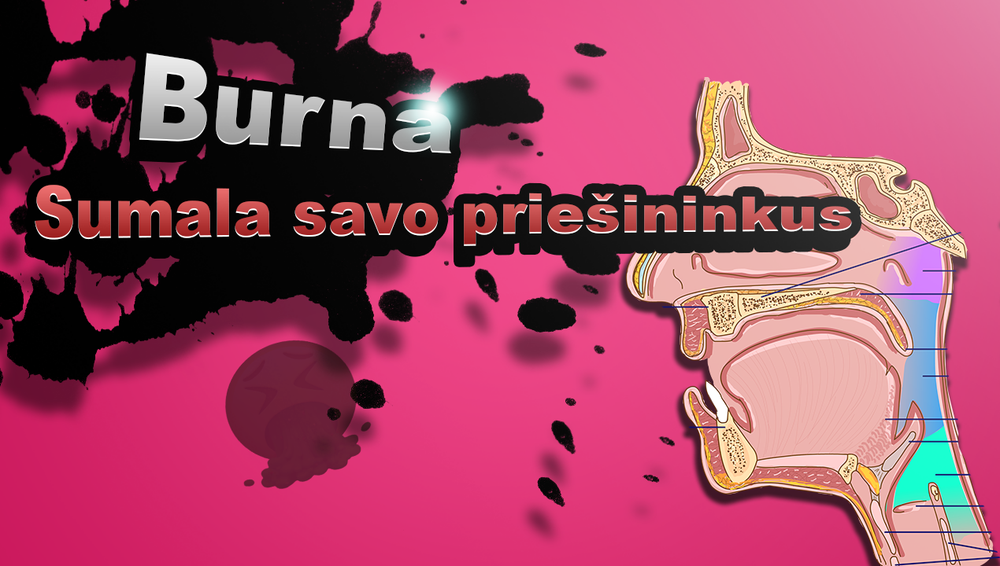
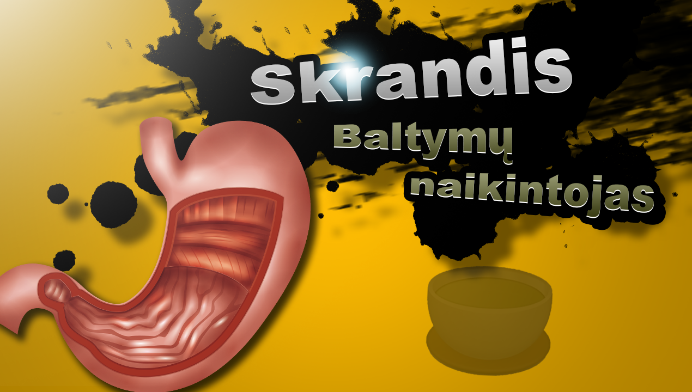
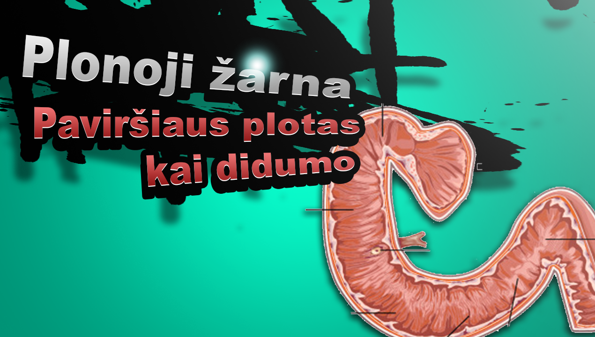
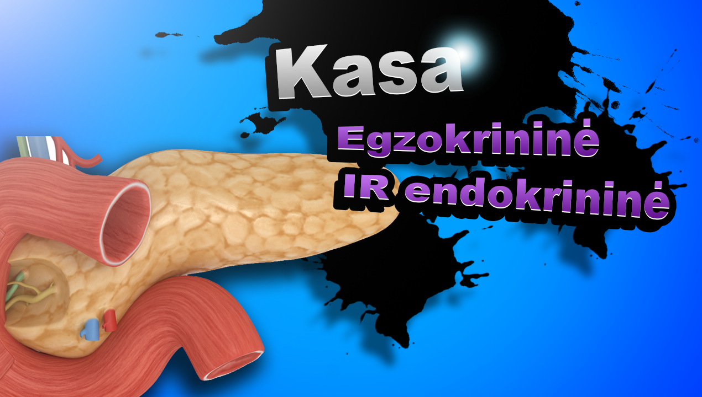
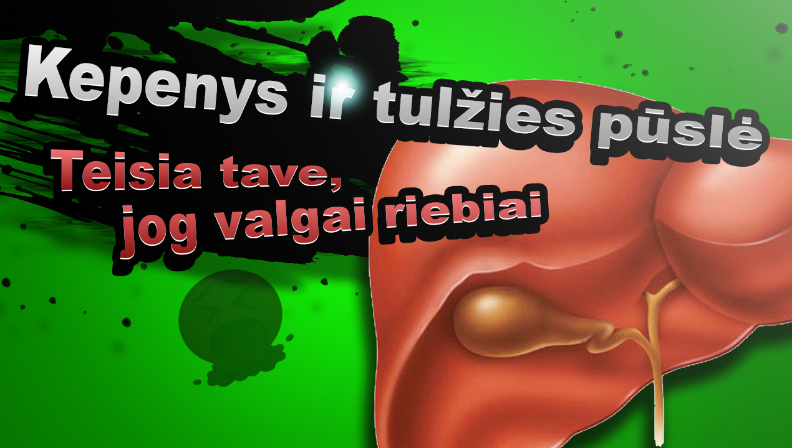
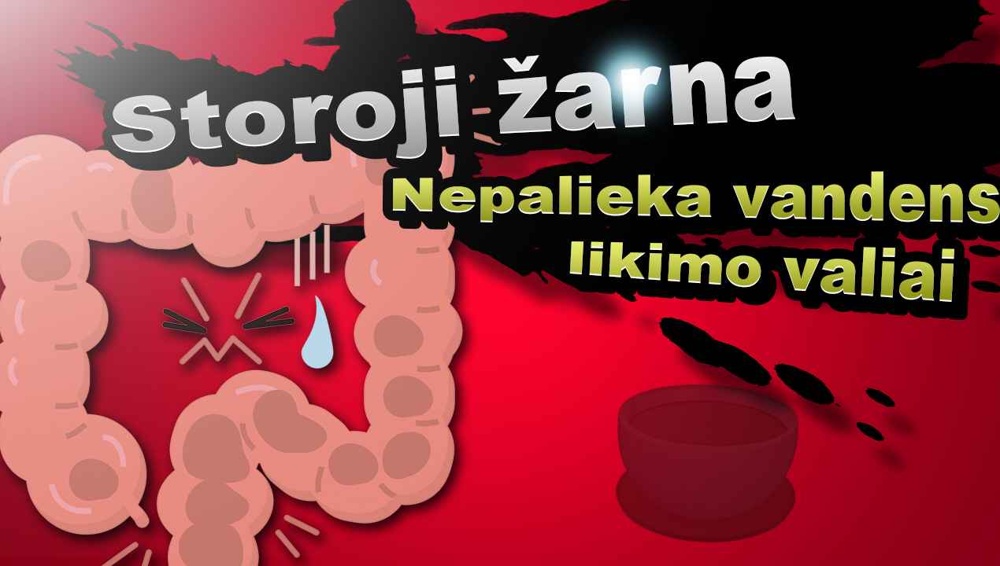

Chapter 16 Virškinimas
Žmogus yra heterotrofas ir išgyvenimui turi maitintis kitų organizmų medžiagomis, jog išgyventų. Tam yra virškinimo sistema, kurią sudaro virškinimo traktas ir virškinimo liaukos. Virškinimas yra nuostabus procesas, nes jis apjungia kelis procesus, kurie vyksta vienu metu: medžiagų judėjimą virškinimo traktu, medžiagų cheminį virškinimą su virškinimo liaukų išskirtais fermentais ir medžiagų įsisavinimo (absorbcijos) reguliaciją. Skyrius suskaidytas į virškinimo etapus nuo maisto patekimo pro burną iki pašalinimo per išeinamąją angą.
16.1 Burna

Burną sudaro daug skirtingų organų, nes burna prisideda ne tik prie maisto virškinimo, bet ir kalbos.
Kramtymas yra svarbus keliais aspektais: 1. Maistas dažnai turi nesuvirškinamas dalis (celiuliozę), kuri saugo maistingas dalis (pavyzdžiui, vaisiai), kramtymas leidžia fermentams turėti kontaktą su maistingomis dalimis. 2. Padidina virškinamo maisto paviršiaus plotą 3. Sumala maistą į smulkią masę, todėl ji lengviau slenka virškinamuoju traktu bei nepažeidžia virškinamo trakto gleivinės.
Išskirtos seilės turi kelias funkcijas: 1. Valgymo metu: jos suvilgo maistą, seilėse esanti \(\alpha\)-amilazė skaido polisacharidus (krakmolą) 2. Bendrai seilės išsiskiria nuolatos ir tai irgi turi svarbos: seilės nuplauna kenksmingas bakterijas ir maisto daleles, kuriomis jos galėtų misti. Taip pat seilėse ir lizocimo bei antikūnų, kurie naikina arba inaktyvuoja bakterijas.
Seilės yra šarmiškos, pH tarp 6 ir 7.
16.2 Stemplė
Stemplė yra aktyvus organas - lygieji raumenys stemplėje aktyviai stumia sukramtytą maistą žemyn į skrandį. Tarp stemplės ir skrandžio yra piliorinis sfinkteris, kuris saugo, jog skrandžio rūgštus turinys negrįžtų į stemplę. Dėl aktyvių stemplės judėsių ir sfinkterio maistas negali tiesiog grįžti į burną, pavyzdžiui, stovint aukštyn kojomis.
16.3 Skrandis

Skrandis nuostabus organas - jis turi tris lygiųjų raumenų sluoksnius, ir gleivinę, kuri išskiria du pagrindinius dalykus: HCl ir pepsiną.
16.4 Dvylikapirštė žarna

16.5 Kasa

16.6 Kepenys

16.7 Storoji žarna

16.8 Užduotys
- Sugalvokite savo Smash Bros tematikos memą - koks galėtų būti kiekvieno organo prisistatymas į kovą?
- Šiame skyriuje sužinojote apie organus ir jų normalią funkciją, įvardinkite vieną virškinimo sistemos sutrikimą ir paaiškinkite, kaip sutrinka organo funkcija ir išsivysto liga. Virškinimo sistemos sutrikimų ir ligų pavyzdžiai: ėduonis, achalazija, skrandžio opaligė, tūlžies pūslės akmenligė, pankreatitas, celiakija, opinis kolitas.